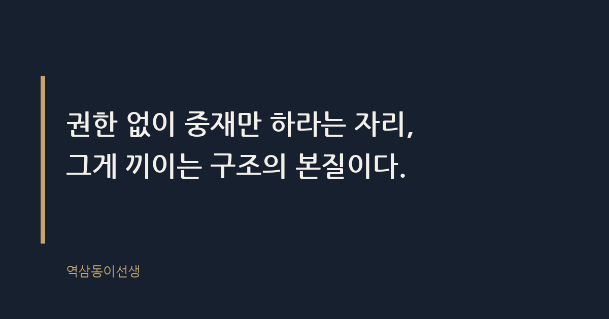
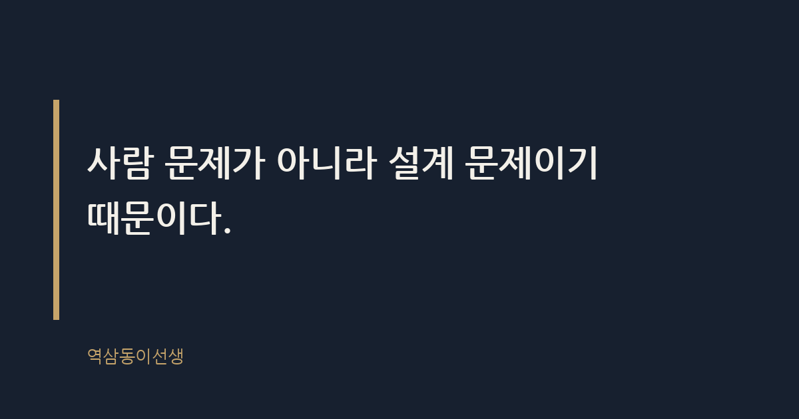

주제 중간관리자가 위아래에서 끼는 이유 (evergreen / career)
제목 후보
메타 설명 중간관리자가 위아래에서 끼는 이유는 성격이나 능력이 아니라 책임과 권한의 불균형이라는 구조적 문제다. 회의실 장면으로 보는 중간관리자 번아웃의 원인과 대처법.
라벨 중간관리자, 직장생활, 중간관리자번아웃, 커리어, 조직문화, 팀장스트레스, 리더십, 직장인고민, 권한과책임, 회사생활팁, 번아웃
실용 자산 예시 문장 모음 — 중간관리자가 위아래에 쓰는 말을 다르게 해야 하는 이유를 설명하는 주제라, 검색자가 바로 써먹을 수 있는 상황별 화법 예시가 실용성을 높인다
발행 전 팩트체크
이미지 (Blogger 편집기에 드래그해 넣으세요)
도입부 사진 · ⓒ MagicDesk / Pexels


몇 해 전 마케팅본부 회의실에서 본 장면이 아직도 선명하다. 파트장 하나가 임원 보고를 마치고 바로 다음 시간에 팀원들과 캠페인 회의를 잡았다. 임원 앞에서는 "예산을 줄이겠습니다"라고 말하고 나와서, 팀원들 앞에서는 "다들 조금만 더 버텨보자"라고 말했다. 같은 사람 입에서 10분 만에 나온 말인데 방향이 정반대였다. 그 파트장은 회의가 끝나고 탕비실에서 믹스커피를 타며 혼잣말로 중얼거렸다. "나는 대체 누구 편이지."
중간관리자가 위아래에서 끼는 이유는 능력이 부족해서도, 성격이 유약해서도 아니다. 책임의 크기와 권한의 크기가 애초에 맞지 않게 설계돼 있기 때문이다. 조직도 위에서 보면 예쁘게 떨어지는 삼각형이지만, 그 삼각형 중간층에 서 있는 사람 입장에서는 양쪽에서 당기는 줄 두 개를 혼자 쥐고 있는 모양이다.
중간관리자란 조직 위계에서 경영진의 결정을 실무진에게 전달하고, 동시에 실무진의 현실을 다시 경영진이 알아들을 말로 번역해 올리는 역할을 맡은 사람이다. 흔히 팀장, 파트장, 실장 직급이 여기 해당한다. 이 정의에서 중요한 단어는 '번역'이다. 번역가는 원문을 그대로 전달하지 않는다. 양쪽 언어를 다 이해하면서 손실 없이 옮기려 애쓰는 사람이다.
문제는 번역가에게는 사전이라도 쥐어주는데, 중간관리자에게는 그런 공식 매뉴얼이 없다는 점이다. 경영진의 언어(숫자, 전략, 효율)와 실무진의 언어(일정, 감정, 피로도)는 애초에 문법 구조가 다르다. 그 둘을 하루에도 몇 번씩 오가며 실시간으로 통역하는 역할, 그게 중간관리자다.
예전 회사에서 신제품 론칭을 앞두고 임원에게 보고한 숫자와, 그날 저녁 팀원들에게 전달한 숫자가 같은 보고서에서 나온 것인데도 전혀 다른 이야기처럼 들렸던 기억이 있다. 임원에게는 "출시일은 그대로 가고, 리소스는 조정하겠다"로 보고했고, 팀원들에게는 "일정은 좀 늦출 수 있을지 다시 논의해보겠다"로 전달됐다. 거짓말을 한 게 아니다. 같은 사실을 각자 듣고 싶은 방식으로 번역하다 보니 두 문장의 체감 온도가 완전히 달라진 것이다.
경영진 입장에서 중간관리자는 '현장을 통제하는 손잡이'다. 실적이 안 나오면 가장 먼저 호출되는 사람도, 전략이 안 먹히면 가장 먼저 설명을 요구받는 사람도 중간관리자다. 반대로 실무진 입장에서 중간관리자는 '위의 결정을 막아주지 못하는 방패'다. 야근이 늘어도, 인력이 안 늘어도, 그 불만의 첫 수신자는 역시 중간관리자다.
양쪽 다 틀린 기대는 아니다. 경영진은 성과를 원하고, 실무진은 숨 쉴 틈을 원한다. 둘 다 합리적인 요구다. 그런데 그 두 요구를 동시에 들어줄 자원, 즉 예산이나 인력이나 시간을 늘릴 권한은 대개 중간관리자에게 없다. 권한 없이 중재만 하라는 자리, 그게 끼이는 구조의 본질이다.
이 구조가 가장 적나라하게 드러나는 때는 위기 상황이다. 평소에는 양쪽 언어를 적당히 섞어서 무난하게 넘어갈 수 있지만, 매출이 흔들리거나 큰 클레임이 터지면 번역이 더 이상 작동하지 않는다. 예전에 함께 일했던 팀장 한 명은 분기 실적이 꺾이자 임원 회의에서 "현장 역량 문제가 아니라 인력 구조 문제"라고 말했다가, 그 자리에서 "그럼 당신이 관리를 잘못한 거 아니냐"는 말을 들었다. 돌아와서 팀원들에게는 그 대화를 전혀 전달하지 못했다. 전달하는 순간 자신의 입지가 더 흔들릴 걸 알았기 때문이다.
이런 순간에 중간관리자는 선택을 강요받는다. 위에서 들은 말을 그대로 전하거나, 자신이 방패가 되어 삼키거나. 둘 다 정답이 아니다. 전자는 팀의 사기를 무너뜨리고, 후자는 자신을 갉아먹는다. 통역이 깨지는 순간을 자주 겪은 사람일수록 번아웃에 빠르게 도달한다.
한 채용플랫폼이 중간관리자급 직장인을 대상으로 진행한 설문에서 상당수가 '권한보다 책임이 크다'고 답했다고 알려졌다. 체감으로도 비슷하다. 예산 편성권은 임원에게 있고, 채용 여부도 인사팀 승인이 필요하고, 평가 기준도 본사 가이드라인을 따라야 한다. 정작 실무진이 매일 느끼는 피로와 불만을 해결할 실질적 수단은 중간관리자 손에 거의 없다.
그런데도 평가는 중간관리자가 그 팀의 '리더십'으로 받는다. 팀 분위기가 가라앉으면 중간관리자의 소통 능력 문제로, 팀 성과가 떨어지면 중간관리자의 관리 능력 문제로 귀결된다. 권한 없이 책임만 쌓이는 구조에서는 아무리 유능한 사람을 앉혀도 같은 결과가 나온다. 사람 문제가 아니라 설계 문제이기 때문이다.
실제로 인사팀에 있을 때 퇴사 면담에서 가장 자주 들었던 말 중 하나가 "내가 결정할 수 있는 게 없어서 지쳤다"였다. 연봉도, 평가도, 조직개편도 자신의 선 바깥에서 정해지는데, 그 결과를 설명하고 설득하는 일은 온전히 자신의 몫이었다는 것이다. 권한 없는 책임은 숫자로는 잘 드러나지 않지만, 퇴사 면담 녹취를 풀어보면 가장 많이 반복되는 문장이다.
이 신호들이 두세 개 이상 겹친다면, 그건 성격 탓이 아니라 자리 탓일 확률이 높다. 번아웃이란 장기간의 과도한 역할 부담으로 정서적·신체적 에너지가 고갈된 상태를 뜻한다. 중간관리자의 번아웃은 대개 일이 많아서가 아니라, 역할의 방향이 계속 충돌해서 온다.
이 신호들을 방치한 중간관리자가 결국 선택하는 길은 크게 둘로 갈린다. 하나는 조용히 역할을 축소하는 쪽이다. 더 이상 양쪽을 설득하려 애쓰지 않고, 전달자 역할만 기계적으로 수행한다. 겉으로는 평온해 보이지만 팀원들은 금세 알아챈다. "요즘 팀장님이 우리 얘기를 위에 안 가져가는 것 같다"는 말이 돌기 시작하면, 이미 신뢰가 빠져나가고 있다는 뜻이다.
다른 하나는 이직이다. 중간관리자급 퇴사 사유를 들어보면 연봉보다 "더 이상 이 자리에서 버틸 에너지가 없다"는 말이 훨씬 많다. 승진으로 올라간 자리인데 정작 그 자리에서 가장 먼저 소진되는 역설, 이게 많은 조직에서 반복되는 패턴이다. 승진을 앞둔 후배들에게 축하보다 먼저 이 구조를 설명해주는 이유도 여기에 있다.
끼인 자리에서 벗어날 수 없다면, 적어도 위아래에 전달하는 말의 방식은 다르게 설계해야 한다. 같은 사실이라도 숫자로 말해야 할 상대와 감정을 인정받아야 할 상대가 다르기 때문이다. 아래 예시는 실제로 효과를 봤던 화법과, 오히려 신뢰를 깎아 먹었던 화법을 나란히 놓은 것이다.
| 상황 | 이렇게 말한다 | 이건 피한다 |
|---|---|---|
| 임원에게 인력 부족 보고할 때 | "현재 인원으로는 일정이 3주 지연됩니다. 인력 보강 또는 범위 조정 중 하나가 필요합니다." | "팀원들이 너무 힘들어합니다." (숫자 없이 감정만 전달) |
| 팀원에게 예산 삭감 전달할 때 | "이번 분기 예산이 줄었다. 대신 우선순위를 같이 다시 정하자." | "위에서 그렇게 하라니까 어쩔 수 없다." (책임 회피형) |
| 야근을 요청할 때 | "이번 주만 마감 때문에 늦게까지 남아야 한다. 다음 주 반차로 보상하겠다." | "다들 하는데 왜 너만." (비교로 압박하는 화법) |
| 성과 압박을 전달할 때 | "숫자가 기대에 못 미친다. 원인을 같이 짚어보자." | "너희가 더 열심히 해야 한다." (원인 분석 없는 질책) |
중간관리자 자리는 조직이 존재하는 한 사라지지 않는다. 피라미드든 사각형이든, 위아래를 잇는 층은 반드시 필요하다. 다만 그 자리에 앉은 사람이 모든 걸 혼자 흡수해야 한다는 착각만은 버려야 한다. 할 수 있는 건 역할의 경계를 말로 분명히 긋는 것, 그리고 권한이 없는 부분은 솔직하게 "내 권한 밖"이라고 인정하는 것이다.
씁쓸하지만 그 경계를 긋는 순간, 역설적으로 양쪽 모두에게 신뢰를 얻는 경우를 여러 번 봤다. 임원은 "저 사람은 과장하지 않는다"고 느끼고, 팀원은 "저 사람은 숨기지 않는다"고 느낀다. 끼인 자리에서 완전히 벗어날 수는 없어도, 끼인 채로 버티는 방식은 선택할 수 있다.
Q. 회의실 들어갈 때와 나올 때 완전히 다른 사람이 되어본 적, 있으신가요?